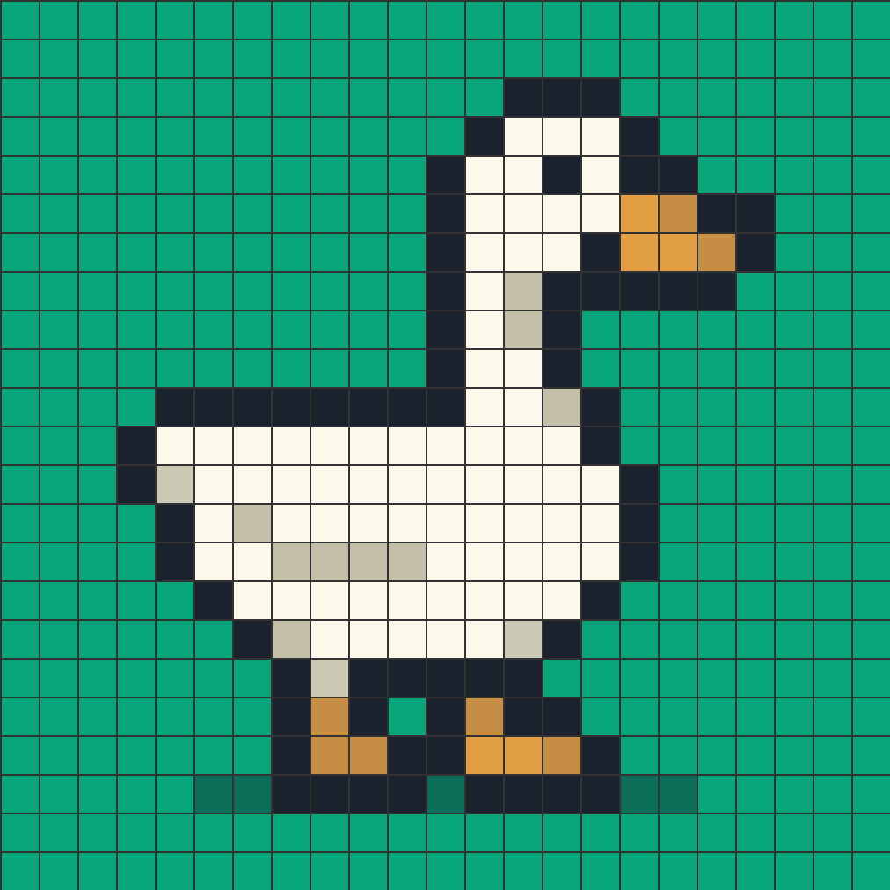
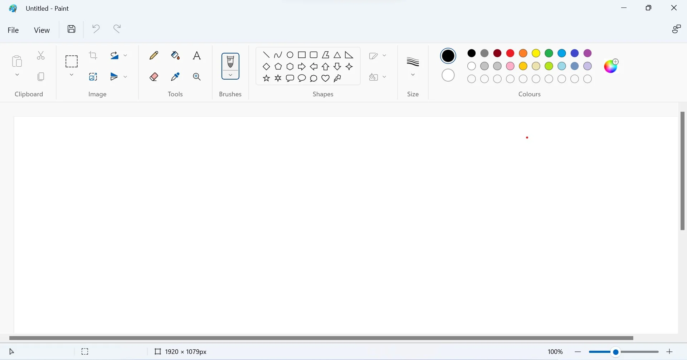
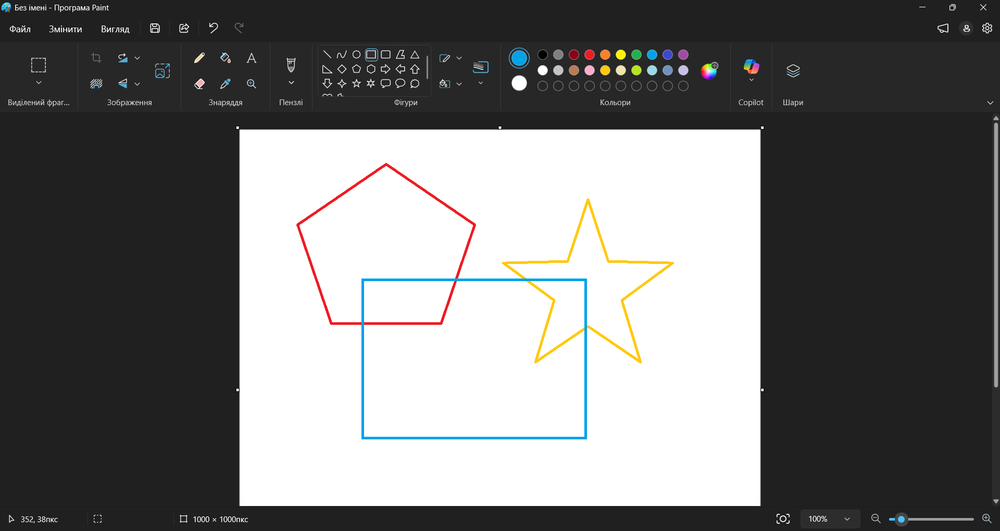
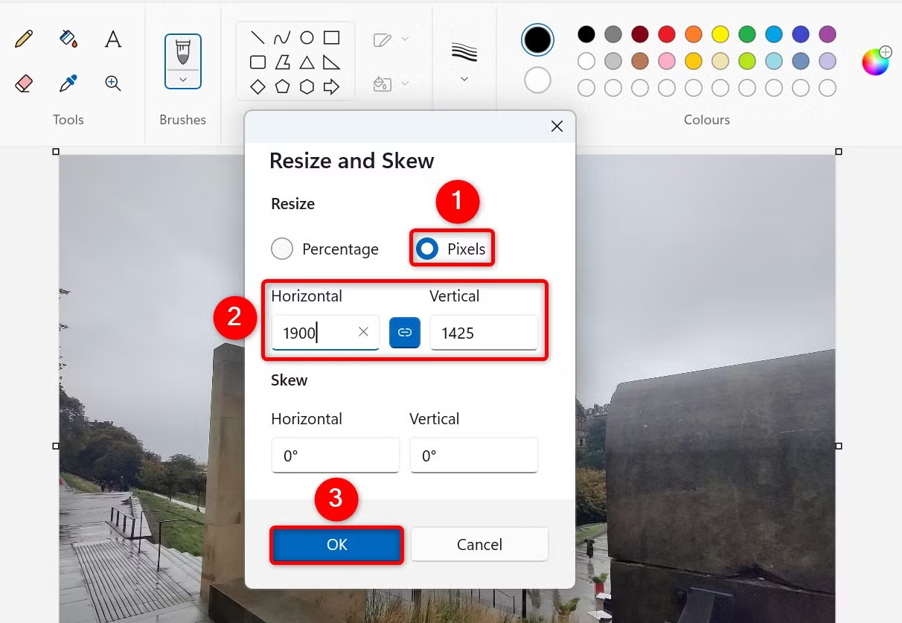
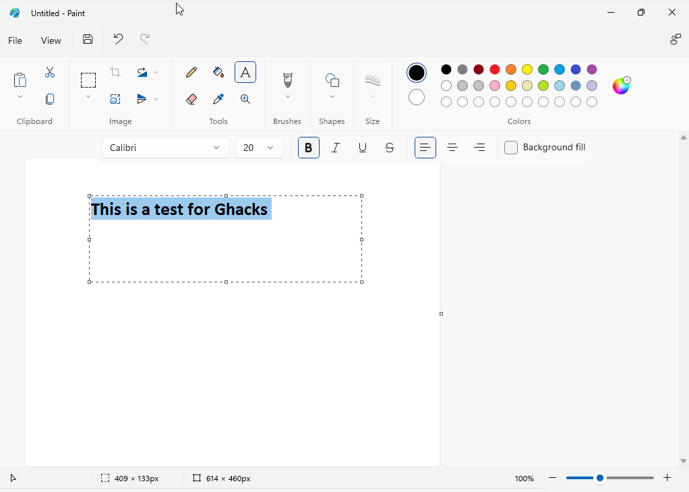

Карандаш или кисть? Фигура или свободная линия? Как изменить готовый фрагмент и почему заливка иногда окрашивает совсем не то, что мы ожидали? Разбираемся с инструментами Paint.
Paint — графический редактор, предназначенный для создания и простой обработки растровых изображений.
В нём можно рисовать, работать с цветом, добавлять геометрические фигуры и текст, изменять готовые изображения и сохранять результат в графический файл.

Растровое изображение состоит из множества маленьких цветных точек — пикселей.
Обычно мы их не замечаем. Но при сильном увеличении изображения отдельные пиксели становятся видны.
Большинство инструментов находятся в верхней части окна. Центральную часть занимает рабочая область — холст.

Карандаш, заливка, текст, ластик, пипетка и другие.
Разные способы свободного рисования.
Линии и готовые геометрические объекты.
Палитра для выбора цветов изображения.
Для свободного рисования в Paint можно использовать несколько инструментов. Два основных — «Карандаш» и «Кисти».
Создаёт тонкую произвольную линию. Подходит для небольших деталей и точного рисования.
Позволяют создавать линии разного вида и толщины.
Цвет выбирается из палитры. В Paint можно работать с основным и дополнительным цветом.
Для некоторых инструментов также можно изменять толщину линии.
Используется для удаления ненужных участков рисунка.
Заполняет выбранным цветом замкнутую область.
Позволяет взять цвет непосредственно с изображения.
Изменяет масштаб просмотра, не изменяя сам рисунок.
Инструмент «Заливка» окрашивает связанную область. Если в контуре есть разрыв, цвет может выйти за его пределы.
Если нужен ровный круг, прямоугольник или точная линия, удобнее использовать готовые фигуры.

Иногда нужно изменить не всё изображение, а только отдельный фрагмент. Для этого его сначала выделяют.
В Paint можно использовать прямоугольное и произвольное выделение.

Инструмент «Текст» позволяет разместить надпись непосредственно на изображении.
После создания текстовой области можно настроить шрифт, размер, начертание и цвет текста.

Хорошая работа в графическом редакторе начинается с вопроса: «Что именно я хочу сделать?»
Чтобы работа не исчезла после закрытия Paint, изображение необходимо сохранить в файл.
При сохранении важно выбрать понятное имя файла, нужную папку и подходящий графический формат.
Хорошо подходит для изображений с чёткими линиями, текстом и однотонными областями.
Позволяет уменьшать размер файла, но использует сжатие с потерями.
Классический формат растровых изображений. Файлы обычно занимают больше места, чем сжатые изображения.
Paint предоставляет набор инструментов для создания и редактирования растровых изображений. Главное — не просто знать названия кнопок, а понимать, какой инструмент лучше подходит для конкретной задачи.